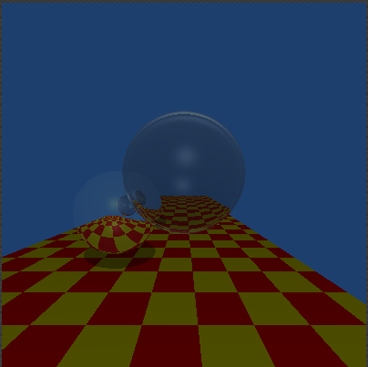
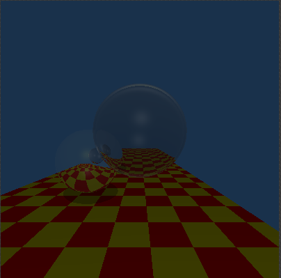
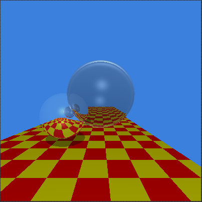
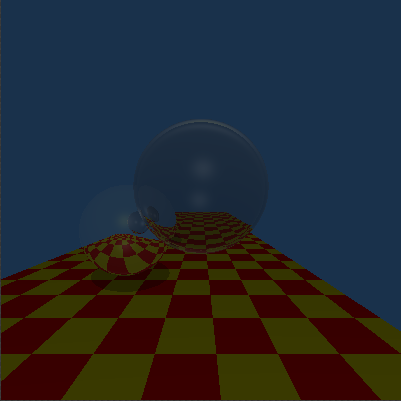
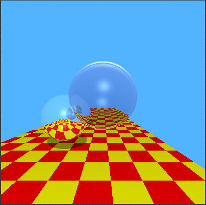

Overview
In this section, we'll add some tone reproduction to the Ray Tracer
All we had to do was follow some simple algorithms during our ImageData creation stage and edit the values of the pixels
Feel free to test out some parameters below
Interactive Rendering
Compression
L Max
Ld Max
Samples Per Pixel
Renderings
LMax = 10, LdMax = 500 | left: Ward, right: Rein


LMax = 100, LdMax = 500 | left: Ward, right: Rein


LMax = 1000, LdMax = 500 | left: Ward, right: Rein
